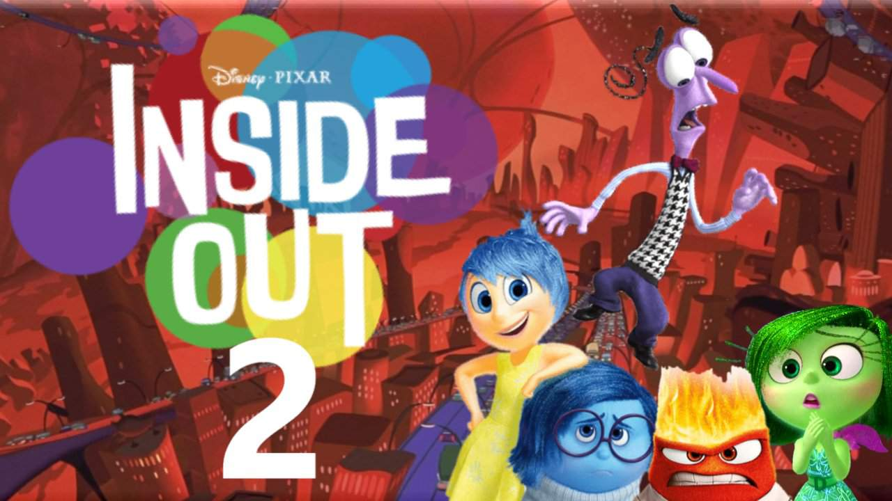
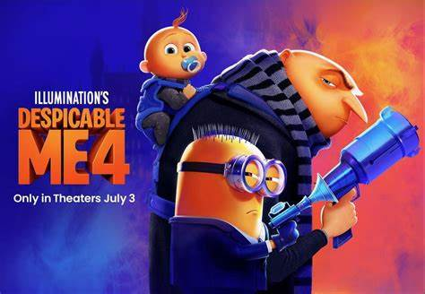
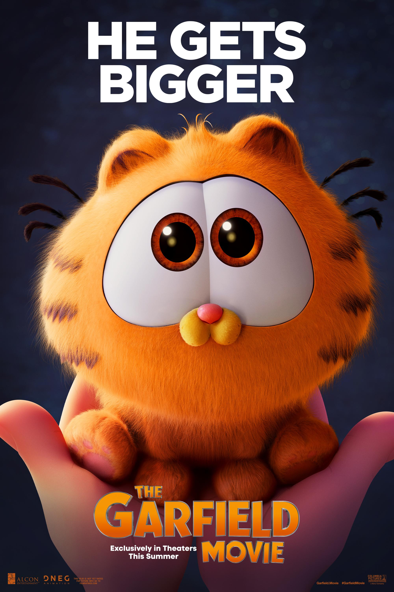

Inside out
What makes Inside Out an unusual addition to the Pixar movie catalog is that it's a psychological adventure - quite literally, much of the action takes place within the mind of an 11-year old girl named Riley, making this the second Pixar original work to feature a female protagonist, after Brave.
Despicable Me
Despicable Me 4 is set to release in 2024 and promises to be one of Gru's wildest adventures yet1. The film features Gru, Lucy, Margo, Edith, and Agnes welcoming a new member to the family, Gru Jr., who is intent on tormenting his dad. Gru faces a new nemesis in Maxime Le Mal and his girlfriend Valentina, and the family is forced to go on the run2.
Kung Fu

Kung Fu Panda is a franchise that follows the adventures of Po Ping, a giant panda who becomes the prophesied Dragon Warrior and masters kung fu. Set in a fantasy wuxia genre version of ancient China, the story features anthropomorphic animals1. In the opening scene, a mysterious panda, reputed to be a grand master of kung fu, enters a tavern and is immediately attacked by local ruffians2.
Garfield
Garfield is a fictional cat and the protagonist of the comic strip of the same name, created by Jim Davis. He is portrayed as a lazy, fat, cynical, and self-absorbed orange tabby Persian cat, known for his love of lasagna, sleeping, and hatred of Mondays, Nermal, and exercise.